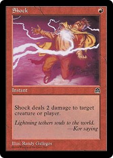
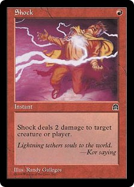

Magic is a TCG or Trading Card Game where players collect cards to build their own decks they use
to play against each other
While certain cards allow you to win in specific ways, the most common goal of the game is to
reduce your opponents life total to zero by summoning cratures and casting spells
While premise itself is simple, my favorite part of the game is the diverse strategies and
synergies that can be used when deckbuilding
You can play a complicated deck that relies on a multi card combo over several turn combos or a deck
as with a plan as simple as "deal a lot of damage to get rid of my opponent and their creatures"

 
